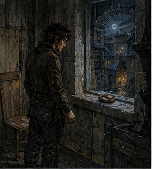

Darrowmere charged refugees for soup.
One copper.
I learned this because Alden had no copper.
“I have copper,” he said.
“You have a silver.”
“That is money.”
“It is too much money for soup.”
“I can get change.”
The woman behind the pot looked at him.
“No.”
Alden looked at me.
I looked at the woman.
She had a ladle.
I had learned enough today.
“Two soups,” I said.
“One copper each.”
I paid.
Alden took his bowl.
“You owe me.”
“One copper.”
“Yes.”
“You owe Antonius gold.”
“That is unrelated.”
“Is it?”
“Yes.”
We sat on the edge of a dry fountain in Darrowmere’s central square and ate.
The soup contained barley, onion, cabbage, and something that had once been optimistic about becoming meat.
It was excellent because it was hot, not because it was good.
The sun had gone down behind the western roofs. Smoke still marked the east, but less than before. The bells had not rung for nearly an hour.
People had begun doing evening things.
That was stranger than the monsters.
A shopkeeper shuttered half his windows and left the other half open.
A woman swept broken glass into a pile.
Two watchmen argued about where to put a lantern.
A boy carried three loaves through the square and sold all of them before reaching the other side.
Somebody had erected a chalk board outside the grain office.
ROOMS NEEDED.
ROOMS OFFERED.
ANIMALS HELD.
MISSING PERSONS.
WORK CREWS.
The handwriting changed every few lines.
Names accumulated.
Names disappeared.
Darrowmere was surviving administratively.
I ate.
Alden ate faster.
His left arm stayed close to his body despite all his complaints about the restriction.
Good.
“You’re staring,” he said.
“At what?”
“The board.”
“Yes.”
“Why?”
“Because I am reading it.”
“You’ve read it four times.”
That seemed excessive.
I looked at my bowl instead.
“Where are we sleeping?”
Alden stopped eating.
Ah.
There it was.
We had arrived without bedrolls, spare clothes, a return plan, or a contract assigning lodging.
My shirt had been cut off.
I was wearing a borrowed gray undershirt from the infirmary that was too short in the arms.
My sword was still on the road unless someone had recovered it.
My knife was also on the road, though in a different location.
I had one copper less than before.
Alden had one copper debt more.
We had been very busy becoming less prepared.
“Guild hall?” Alden asked.
“Full.”
“Inn?”
“Probably full.”
“Stable?”
“No.”
“Why not?”
“Because I have standards.”
“You rode in a boat on a wagon.”
“That was transportation.”
Alden finished his soup.
“Stable.”
“No.”
We checked the Guild hall.
Full.
Not metaphorically.
There were people sleeping under the registration table.
The clerk inside pointed us toward Temple House.
Temple House was full.
Temple House pointed us toward three inns.
The first inn had no rooms.
The second had floor space for six copper each.
“Six?” Alden asked.
The innkeeper looked at him.
“Floor.”
“Not bed?”
“Floor.”
“Blanket?”
“Two copper.”
“Each?”
“Blanket.”
Alden looked at me.
I said, “Stable.”
He smiled.
I hated him.
The third inn had no rooms, no floor, no stable, and one woman willing to rent us the use of a chicken shed for four copper if we did not disturb the chickens.
We returned to the square.
The chalk board had changed.
ROOMS NEEDED now had seventeen more marks.
A man stood beside it shouting.
“Anyone with loft space, spare room, covered yard, dry shed, put your street and number. No promises. Watch may inspect. Guild will pay partial if assigned.”
Alden said, “Guild will pay?”
“Apparently.”
“We should have waited.”
“We did.”
“No. Before soup.”
“That has nothing to do with lodging.”
“It’s all money.”
That sounded like Antonius.
I disliked it.
A woman at the board turned.
“Bronze?”
“Yes,” Alden said.
She looked at our wrist tags.
Then at our injuries.
“Working?”
“Apparently not,” I said.
“Can you walk?”
“Yes.”
“Then working.”
She handed us a piece of chalk.
“Name.”
I wrote Greg.
Alden wrote Alden Marr.
“City?”
We gave it.
“Need?”
“Two places to sleep.”
“Together?”
Alden looked at me.
I looked at him.
“No,” we said simultaneously.
The woman did not react.
“Any animals?”
“No.”
“Children?”
“No.”
“Medical restrictions?”
Alden held up his tag.
I held up mine.
She read them.
“Interesting.”
“It is not.”
She marked something.
“Can either of you cook?”
“Yes,” I said.
Alden said, “No.”
I looked at him.
“You can cook.”
“I can heat food.”
“That is cooking.”
“No.”
The woman said, “Can either of you cook without setting anything on fire?”
“Yes,” I said.
Alden hesitated.
“Why did you hesitate?”
“I was deciding whether frying counts.”
She wrote one name.
Mine.
“Wait.”
“You said yes.”
“For what?”
“Work lodging.”
“What work?”
“Kitchen.”
“No.”
“You need a room.”
“I need sleep.”
“You need a room first.”
Alden started laughing.
The woman pointed at him.
“You can carry water one-handed.”
His laughter stopped.
“No lifting left,” he said.
“Bucket in right.”
He considered.
“That seems legal.”
“It is.”
We were assigned to the Golden Sheaf.
Not an inn. A bakery.
The owner had two rooms above the ovens normally used by seasonal workers.
Both seasonal workers were currently with family west of town.
The rooms were available.
The price was three hours of evening work.
Each.
I objected on economic grounds.
Alden objected because he was tired.
The board woman ignored us both.
The Golden Sheaf was four streets from the square.
Warmth hit us before the door opened.
Bread.
Yeast.
Flour.
Woodsmoke.
Butter.
For one dangerous second, I would have agreed to anything.
The owner was named Brina.
She was short, square, gray-haired, and covered in flour from wrists to eyebrows.
She looked at us.
“Which one cooks?”
I raised my hand.
“No casting,” she said.
“Yes.”
“Good. Magic ruins proofing if idiots use heat spells.”
“I was not going to use magic.”
“Everyone says that until they get impatient.”
“I do not know heat magic.”
She paused.
“Better.”
Alden leaned against the doorframe.
“What do I do?”
“Water.”
He sighed.
“Of course.”
“Right hand.”
He looked at her.
“How does everyone know?”
“Tag.”
He looked at the tag as though betrayed.
We worked. Not heroically.
I chopped onions.
Then carrots.
Then cabbage.
Then more onions.
Brina made tomorrow’s soup in a pot large enough to drown a child.
I did not mention that comparison.
Alden carried water from the courtyard pump one bucket at a time.
He tried two once.
Brina pointed at his wrist.
He put one down.
No argument.
Interesting.
The bakery had not closed because of the breach. It had changed.
Bread for normal customers ended at midday.
After that, Brina switched to coarse loaves for watch, Guild, displaced families, and anyone holding a meal chit.
The town paid some.
The Guild paid some.
Temple House paid some.
Some people paid nothing.
Brina kept three ledgers.
I asked why.
She told me to chop.
I chopped.
Twenty minutes later she explained anyway.
“Town rate. Guild rate. Charity.”
“Different prices?”
“Different debts.”
“Who pays charity?”
“I do until I don’t.”
“What does that mean?”
“It means chop.”
I chopped.
Alden returned with water.
“Why are you smiling?”
“I’m not.”
“You are.”
“Work.”
“That’s upsetting.”
Brina pointed at the pump.
He left.
The kitchen had five other people.
None were employees.
A cooper’s wife kneaded dough.
A boy from the tannery washed bowls.
An elderly man cut turnips badly.
A watchwoman on break ate standing up while labeling sacks.
Nobody asked us about the creatures. For nearly an hour, the monsters did not exist.
There were onions, bowls, flour, and the question of whether the second soup pot had enough salt.
I tasted it.
“No.”
Brina tasted it.
“Yes.”
“You asked me.”
“I wanted to know if you were stupid.”
“Result?”
“Undecided.”
I liked her less.
Then she gave me the heel of a fresh loaf with butter.
I reconsidered.
My headache eased.
Not gone.
Better.
The NO CASTING tag remained on my wrist.
At one point a stack of bowls began to slide.
My hand moved.
Mana did not.
I caught them with my other hand.
Three broke.
Brina looked at the pieces.
“Could’ve been twelve.”
“Yes.”
She handed me a broom.
Good.
I swept.
Something moved outside the rear window.
I looked.
Courtyard.
Pump.
Wall.
Alden.
Nothing else.
He noticed.
“What?”
“Nothing.”
He followed my eyes anyway.
The watcher feeling had faded in the square.
Here it returned.
Not strong.
A pressure between my shoulders.
The sense that if I turned quickly enough I would catch something withdrawing.
I turned quickly.
Nothing.
Alden said, “You’re doing it again.”
“Yes.”
“Still?”
“Yes.”
“Do you want me to check?”
That was a good question.
“No.”
“Why?”
“Because then we have two people staring at roofs instead of one.”
He accepted that.
Also interesting.
We finished the kitchen work after dark.
Brina inspected our hands.
Not metaphorically. Hands.
Alden’s right palm had pump blisters.
Mine smelled permanently of onion.
“Good enough,” she said.
“Room?”
“Upstairs.”
“Bed?”
“Mattress.”
“Blanket?”
“Yes.”
I nearly cried.
Not actually. Possibly.
The rooms were tiny.
Mine had a narrow mattress, a washbasin, a chair with one short leg, and a window overlooking the rear alley.
Alden’s was across the hall.
I washed.
The water turned gray.
Then pink.
Then gray again.
I discovered bruises I had not previously negotiated with.
Hip.
Ribs.
Shoulder.
Knee.
Palm.
My body had submitted an itemized complaint.
I lay down.
The mattress was too soft.
I hated it.
Then I slept.
For eleven minutes.
Someone knocked.
I opened my eyes.
Dark.
Knock.
“Greg.”
Alden.
I got up.
Opened door.
“What?”
He held a copper.
I stared.
“What?”
“Soup.”
I stared harder.
“I owe you.”
“You woke me to repay one copper?”
“You said I owed you.”
“I did not mean tonight.”
“You didn’t specify.”
I took the copper.
“Go away.”
He smiled.
“Good night.”
I closed the door.
Lay down.
Counted to perhaps twenty.
Knock.
I opened it again.
“If this is interest, I will kill you.”
Alden was not smiling.
“Bell.”
I listened.
Nothing.
Then one stroke.
Not alarm pattern.
Single.
Pause.
Single.
Pause.
“What is that?”
“I don’t know.”
We went downstairs.
Brina was already at the front door.
She opened it.
People stood in the street listening.
Single bell.
Pause.
Single.
An old man across the road said, “Found.”
“What?”
“Missing.”
Another bell.
“Found alive?” Alden asked.
The man shrugged.
“Found.”
The town had a bell for that.
Of course it did.
Brina closed the door.
“Bed.”
“That’s it?” I asked.
“What else?”
“Who?”
“Morning.”
She went upstairs.
Alden looked at me.
I looked at him.
Bed.
Correct.
We went.
I closed my door.
Lay down.
The alley outside was quiet.
No bell.
No shouting.
No claws.
I could smell bread through the floorboards.
My channels ached less.
My body ached more.
I had a copper from Alden.
My sword was still missing.
Tomorrow existed.
That was enough.
I closed my eyes.
Watched.
The feeling came back.
Not from the alley.
Not the roof.
Somewhere.
I opened my eyes.
Dark room.
Window.
Chair.
Washbasin.
Nothing.
I waited.
Nothing happened.
Five minutes.
Maybe ten.
I almost slept.
Then something tapped the window.
Once.
I was awake immediately.
No mana.
No sword.
No knife.
NO CASTING.
I did not move.
Tap.
Not again.
Only once.
Could have been wood cooling.
Could have been a branch.
There was no tree outside.
Could have been a bird.
At night.
Could have been nothing.
I waited.
Eventually, I got up.
Slowly.
I did not open the window.
I looked through it.
Alley.
Roofline.
Bakery wall.
Moonlight on stone.
Nothing.
Then I looked down.
On the outer sill sat a small piece of bread.

The heel.
Butter side up.
I stared.
Brina had given me one exactly like it downstairs.
That meant nothing.
Bread existed in bakeries.
People dropped bread.
Birds carried things.
Children did strange things.
Someone could have placed it there before I entered the room.
Except I had looked out this window while washing.
The sill had been empty.
I knew that.
I thought I knew that.
Check.
Could I prove it?
No.
I did not touch the bread.
I closed the curtain.
Then I moved the chair under the door handle.
Not because I was afraid.
Because chairs were free.
I lay down again.
I did not cast.
I did not investigate.
I did not wake Alden.
For a long time, I listened to Darrowmere breathe around me.
Ovens below.
Someone coughing through the wall.
A cart passing far away.
A dog barking twice.
Normal sounds.
Eventually I slept.
In the morning, the bread was gone.